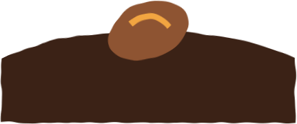
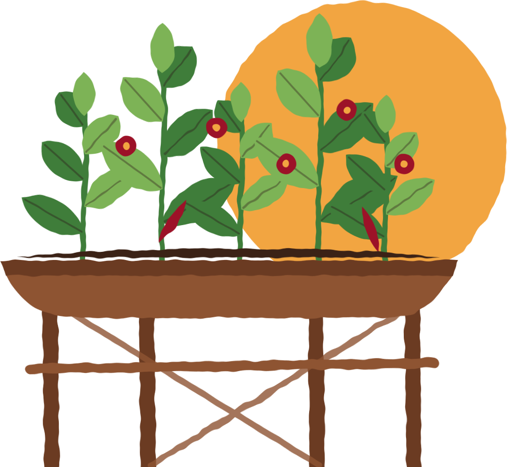
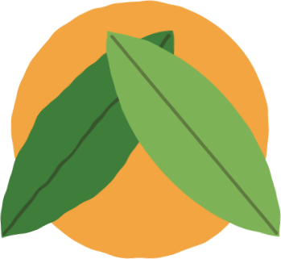

12 años · tramo 1
Semilleros
La marimba te enseña matemáticas y la tradición oral te enseña a leer. Lo que importa aquí es una cosa: que sigas en la escuela.
cupos por Azotea cada año · 8 a 13 años
Juntos por Colombia presenta
o baja con la marea ↓
En el litoral, la marea sube y baja todos los días.
Lo que se siembra en el suelo, el agua se lo lleva.
Por eso las familias levantan la azotea: una huerta sobre pilotes, para cuidar en alto lo que más quieren.
Esta es una historia sobre eso: cómo sembrar en alto el futuro de las niñas, niños y jóvenes del Pacífico. Y empieza contigo.
Imagina que naciste en Buenaventura. Desde aquí, esta historia es la tuya.





Creces oyendo la marimba en las fiestas del barrio.
Has escuchado los alabaos, los cantos con que tu comunidad despide a los suyos.
A tu alrededor hay parteras, maestros del viche y matronas que cocinan como nadie. Son saberes de generaciones.
El Pacífico no es pobre en valor. Le faltan maneras de retenerlo.
Talleres, brigadas, jornadas. Llegan en lancha, dejan algo y se van.
esporádico
0 de 12 meses con acompañamiento
En marzo llega un taller a tu colegio.
En julio, una brigada. Del taller de marzo ya nadie se acuerda.
En noviembre, una jornada. Entre una lancha y la siguiente, todo se enfría.
Los cuatro diagnósticos del litoral repiten la misma palabra.
De cada 100 jóvenes en edad de cursar la media…
Llegas a noveno. El siguiente escalón, décimo, es donde muchos se quedan.
En Colombia, de cada 100 jóvenes en edad de cursar la media, están matriculados en ella.
En Buenaventura, . Dos de cada tres no están en el aula que les corresponde.
Y del otro lado, el saber de los mayores se queda sin aprendices.
Azotea es lo contrario a la lancha.
0meses abiertos
Imagina un lugar que no se va: abierto los doce meses del año.
En una sede que tu comunidad ya reconoce como suya, casi siempre tu propio colegio.
Nada se abre sin la comunidad. Cada sede pasa por un protocolo de activación con dos co-investigadores jóvenes del territorio.
La primera Azotea abre en Buenaventura, en 2027.
De los 8 a los 28 años, la siembra tiene tres tramos. Este es el tuyo.

12 años · tramo 1
La marimba te enseña matemáticas y la tradición oral te enseña a leer. Lo que importa aquí es una cosa: que sigas en la escuela.
cupos por Azotea cada año · 8 a 13 años

15 años · tramo 2
Pasas a décimo. Aprendes con parteras, cantaoras y cocineras, conoces los oficios de tu tierra y escribes tu propia ruta.
cupos por Azotea cada año · 14 a 17 años
19 años · tramo 3
Lo aprendido se vuelve oficio: certificación, empleo con aliados o un negocio propio.
cupos por Azotea cada año · 18 a 28 años
en todo el camino
Salud mental y salud sexual y reproductiva, agentes de derechos y saberes ancestrales de cuidado. Y apoyo a las iniciativas económicas de tu territorio.
Las personas que te enseñaron también tienen un oficio.
marimberamatronaoficio pagado
0sembradores de saber remunerados en 2030
En Azotea, quienes te enseñan son portadoras y portadores de saber de tu propio territorio.
Y reciben pago, porque enseñar también es un oficio.
Para 2030, serán sembradores de saber remunerados.
La meta que más importa: que ningún saber acompañado pierda vitalidad.
De una Azotea en Buenaventura a una red en el litoral.
0Azoteas
0niñas, niños y jóvenes
Esquema ilustrativo, no a escala. Las sedes se definen con el prediagnóstico.
Todo empieza en Buenaventura, en 2027.
Un prediagnóstico elige las siguientes entre 8 y 10 candidatas del litoral: Chocó, Valle, Cauca y Nariño.
Para 2030, Azoteas.
niñas, niños y jóvenes sembrando su futuro, con resultados que se miden.
Lo que llega en lancha, se va.
Lo que se siembra en alto, se queda.
Siembra en Azotea.
La historia en 90 segundos
Para aliados
Con grupo de comparación. Diferencias en diferencias con emparejamiento entre participantes y no participantes; sorteo de cupos donde haya más demanda que oferta.
Resultado primario: aprobación y paso de 9.° a 10.°, con datos del SIMAT. El diseño detecta un efecto de puntos porcentuales.
Además: inserción productiva a seis meses, vitalidad de cada saber acompañado y evaluación con los criterios OCDE-CAD.
ODS 3ODS 4ODS 5ODS 8ODS 10
0personas acompañadas durante los cuatro años
0meses de una Azotea abierta en su primer año
0de la red completa 2027–2030
Estimación lineal para dimensionar, no es una cotización. Total del proyecto: millones (completo) o millones (básico).
Cifras y fuentes